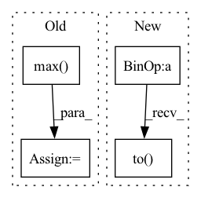

Pattern ID :33521
Before Change
size = [fixed_size[1], fixed_size[0]]
else:
min_size = torch.min(im_shape).to(dtype=torch.float32)
max_size = torch.max( im_shape) .to(dtype=torch.float32)
scale = torch.min(self_min_size / min_size, self_max_size / max_size)
if torchvision._is_tracing():
scale_factor = _fake_cast_onnx(scale)After Change
else:
im_shape = torch.tensor(image.shape[-2:])
ratio = torch.min(new_shape[0] / im_shape[0], new_shape[1] / im_shape[1])
ratio_h = torch.round(im_shape[0] * ratio).to(dtype=torch.int32)
ratio_w = torch.round(im_shape[1] * ratio).to(dtype=torch.int32)
if torchvision._is_tracing():
new_unpad = _tracing_item_onnx(ratio_h), _tracing_item_onnx(ratio_w)In pattern: SUPERPATTERN
Frequency: 4
Non-data size: 4
Instances Fragment ID: 96556833
Project Name: zhiqwang/yolov5-rt-stack
Commit Name: cd1a6ec7cda09de0dc92962a37ecb4f723a8dfeb
Time: 2022-02-03
Author: 92794867+q3394101@users.noreply.github.com
File Name: yolort/models/transform.py
M Class Name: AnonimousClass
N Class Name: AnonimousClass
M Method Name: _resize_image_and_masks(3)
N Method Name: _resize_image_and_masks(5)
M Parent Class:
N Parent Class:
M File Name: yolort/models/transform.py
N File Name: yolort/models/transform.py
M Start Line: 257
M End Line: 286
N Start Line: 67
N End Line: 77
Before Change
actions = self.policy.eval(states.to(self.device))
actions = actions + self._noise_policy.sample([actions.shape[0]])
actions = torch.min(actions, self._high)
actions = torch.max( actions, self._low)
return actions.to("cpu")
def _train(self):
if self._should_train():After Change
def _choose_actions(self, states: State, actions: Action):
// choose vae action
mean, log_var = self.vae.encode(states.to(self.device), actions.to(self.device))
z = mean + (0.5 * log_var).exp() * torch.randn_like(log_var)
vae_action = Action(self.vae.decode(states, z))
// choose normal action
actions = self.policy.eval(states.to(self.device), vae_action.to( self.device) )
actions = actions + self._noise_policy.sample([actions.shape[0]])
return actions.to("cpu")
Fragment ID: 96556835
Project Name: syuntoku14/pytorch-rl-il
Commit Name: a70365be6b670db00fccd89990fb4b28914e10c3
Time: 2020-03-17
Author: syuntoku14@gmail.com
File Name: rlil/agents/bcq.py
M Class Name: BCQ
N Class Name: BCQ
M Method Name: _choose_actions(3)
N Method Name: _choose_actions(2)
M Parent Class: Agent
N Parent Class: Agent
M File Name: rlil/agents/bcq.py
N File Name: rlil/agents/bcq.py
M Start Line: 82
M End Line: 86
N Start Line: 77
N End Line: 84
Before Change
heatmap = cv2.resize(heatmap[0], _input.shape[2:])
heatmap = heatmap - np.min(heatmap)
heatmap = heatmap / np.max( heatmap)
return heatmap
After Change
def grad_cam(self, _input: torch.FloatTensor, _class: List[int]) -> np.ndarray:
if isinstance(_class, int):
_class = [_class] * len(_input)
_class = torch.tensor(_class).to( _input.device)
feats = self._model.get_fm(_input).detach() // (N,C,H,W)
feats.requires_grad_()
_output: torch.FloatTensor = self._model.pool(feats)
_output: torch.FloatTensor = self._model.flatten(_output) Fragment ID: 96556839
Project Name: ain-soph/trojanzoo
Commit Name: 2bf7c2a2e8acba2592ee17d60d1a59b7bd1bbfe5
Time: 2020-11-24
Author: ain-soph@live.com
File Name: trojanzoo/model/imagemodel.py
M Class Name: ImageModel
N Class Name: ImageModel
M Method Name: grad_cam(3)
N Method Name: grad_cam(3)
M Parent Class: Model
N Parent Class: Model
M File Name: trojanzoo/model/imagemodel.py
N File Name: trojanzoo/model/imagemodel.py
M Start Line: 206
M End Line: 222
N Start Line: 190
N End Line: 212
Before Change
Dict: Statistics to be monitored.
Tensor: Weight value.
text = text[:, : text_lengths.max() ] // for data-parallel
speech = speech[:, : speech_lengths.max()] // for data-parallel
// Add eos at the last of sequence
xs = F.pad(text, [0, 1], "constant", self.padding_idx)
for i, l in enumerate(text_lengths):
xs[i, l] = self.eos
ilens = text_lengths + 1After Change
// eos is [0, 0, 0, 0, 0, 0, 0, 0, 0, 0, 0, 0, 0, 0, 0, 0, 0, 0, 0, 0, 0, 0, 0, 0, 0]
// make labels for stop prediction
labels = make_pad_mask(speech_lengths - 1).to( speech.device, speech.dtype)
labels = F.pad(labels, [0, 1], "constant", 1.0)
// calculate tacotron2 outputs
after_outs, before_outs, logits, att_ws = self._forward(text, text_lengths, speech, speech_lengths, speaker_embeddings) Fragment ID: 96556840
Project Name: digitalphonetics/ims-toucan
Commit Name: 24ca2ac33029f434e47969661b0a878773639ab8
Time: 2021-08-12
Author: florian.lux@ims.uni-stuttgart.de
File Name: TrainingInterfaces/Text_to_Spectrogram/Tacotron2/Tacotron2.py
M Class Name: Tacotron2
N Class Name: Tacotron2
M Method Name: forward(6)
N Method Name: forward(6)
M Parent Class: torch.nn.Module
N Parent Class: torch.nn.Module
M File Name: TrainingInterfaces/Text_to_Spectrogram/Tacotron2/Tacotron2.py
N File Name: TrainingInterfaces/Text_to_Spectrogram/Tacotron2/Tacotron2.py
M Start Line: 179
M End Line: 208
N Start Line: 183
N End Line: 199